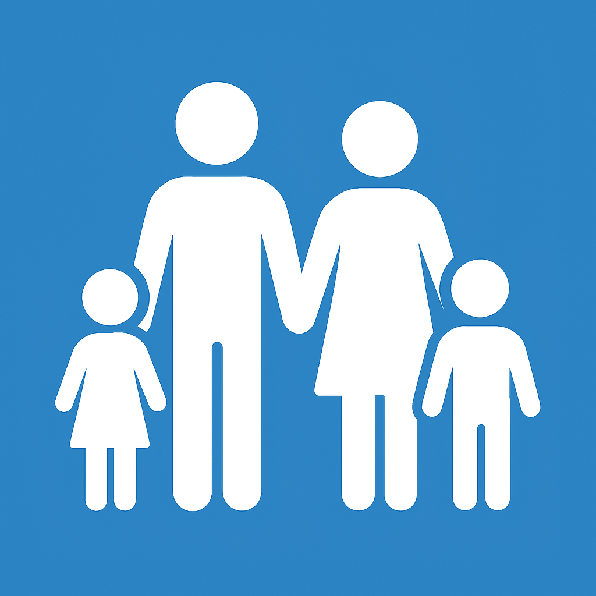

Bienvenidos a Security Family 
Donde la Conciencia Protege Nuestro Futuro
Bienvenido a un espacio creado para defender lo más preciado: la seguridad y la inocencia de nuestros niños y jóvenes en el mundo digital. En un entorno donde 4 de cada 10 niños en Argentina acceden a un teléfono antes de los 9 años y pasan en promedio más de 7 horas diarias conectados, los peligros en la red ya no son una posibilidad lejana, sino una realidad urgente y alarmante.
Cada día, menores de edad se enfrentan a riesgos como el grooming, el ciberacoso, la sextorsión y la exposición a contenidos inadecuados, situaciones que dejan huellas profundas en su desarrollo emocional, psicológico y social. Las cifras no mienten: el 49% de los niños ha conversado con extraños en redes sociales, y 7 de cada 10 han recibido propuestas de noviazgo de desconocidos. Este no es un problema del futuro; es una crisis del presente.
Nuestra Misión
Frente a esta realidad, nace nuestra Plataforma Web de Prevención y Acompañamiento Digital, una iniciativa diseñada con un propósito claro: empoderar a padres, tutores y adultos responsables con herramientas accesibles, información confiable y protocolos de acción inmediata para proteger a los menores en internet. Creemos que la prevención comienza con la conciencia, y la conciencia, con la información correcta.
Estadísticas Relevantes
📱 60% de los jóvenes argentinos permanece conectado más de 7 horas al día.
🚨 1 de cada 3 niños o adolescentes se ha encontrado físicamente con alguien que conoció en internet.
💔 40% de los jóvenes entre 14 y 17 años ha tenido “sexo virtual”.
📉 Argentina es el segundo país con más casos de ciberacoso en la región, con más de 30.000 denuncias acumuladas desde 2012.
🎲 24% de los adolescentes entre 12 y 17 años ha apostado dinero en línea.
Riesgos Digitales
GROOMING: EL DEPREDADOR SILENCIOSO
El grooming es una forma de acoso sexual en línea donde un adulto, haciéndose pasar por un menor, gana la confianza de un niño o adolescente con fines de explotación sexual.
¿Sabías que?
- 7 de cada 10 niños han recibido propuestas de noviazgo de desconocidos en redes sociales.
- El 49% de los menores en Argentina ha conversado con extraños en línea.
🚨 Si no actuamos a tiempo, nuestros hijos pueden ser víctimas de manipulación emocional, abuso sexual o incluso secuestro.
Tipos de grooming:
- Engaño emocional a través de redes sociales, videojuegos o apps de mensajería.
- Suplantación de identidad (se hacen pasar por niños o adolescentes).
- Acercamiento gradual con fines de abuso sexual.
Efectos psicológicos
- Ansiedad, depresión, culpa y vergüenza.
- Trastorno de estrés postraumático.
- Autolesiones y riesgo de suicidio.
- Desconfianza crónica hacia los adultos.
Cómo identificarlo:
- El menor recibe mensajes de desconocidos que buscan generar confianza rápidamente.
- Pide mantener conversaciones en secreto.
- Muestra cambios de humor o evita hablar de sus interacciones en línea.
- Recibe regalos virtuales o propuestas de encuentro.
CIBERACOSO: LA HERIDA INVISIBLE
El ciberacoso es el hostigamiento constante a través de internet, que incluye insultos, amenazas, difamación o exclusión social.
¿Sabías que?
- Argentina es el segundo país de Latinoamérica con más casos de ciberacoso.
- Más de 30.000 denuncias se han registrado desde 2012, con un aumento del 50% en los últimos años.
🚨 El acoso en línea puede llevar a depresión, ansiedad, aislamiento e incluso intentos de suicidio.
Tipos de ciberacoso:
- Insultos, burlas o amenazas por redes sociales.
- Exclusión intencional de grupos en línea.
- Difusión de rumores o información privada (doxxing).
- Suplantación de identidad para dañar la reputación.
Consecuencias psicológicas:
- Baja autoestima, ansiedad social y depresión.
- Aislamiento y bajo rendimiento académico.
- Ideación suicida en casos graves.
Cómo identificarlo:
- El niño o adolescente evita usar el celular o redes sociales.
- Muestra angustia después de conectarse.
- Cambia sus hábitos de sueño o alimentación.
- Borra repentinamente sus cuentas en redes.
SEXTORSIÓN: CUANDO LO ÍNTIMO SE VUELVE UN ARMA
La sextorsión ocurre cuando un acosador amenaza con difundir imágenes o videos íntimos de la víctima a cambio de dinero, más material sexual o favores.
¿Sabías que?
- El 35% de los adolescentes ha enviado o recibido fotos íntimas de desconocidos.
- Una vez que el material se comparte, es casi imposible detener su propagación.
🚨 La sextorsión puede destruir la autoestima, la reputación y la salud mental de un joven en cuestión de horas.
Tipos de sextorsión:
- Amenaza con difundir imágenes o videos íntimos a cambio de dinero, más material sexual o favores.
- Uso de material obtenido mediante engaño (ej.: perfiles falsos).
Consecuencias psicológicas:
- Humillación extrema y sensación de desesperanza.
- Ansiedad severa y trastorno de pánico.
- Riesgo alto de autolesión o suicidio.
Cómo identificarlo:
- El menor recibe mensajes amenazantes que exigen algo a cambio de no filtrar contenido.
- Muestra miedo intenso al usar dispositivos.
- Esconde conversaciones o archivos.
CONTENIDO INAPROPIADO: LA EXPOSICIÓN PELIGROSA
Niños y adolescentes acceden fácilmente a contenido violento, pornográfico, apuestas o discursos de odio debido a la falta de controles efectivos.
¿Sabías que?
- El 24% de los adolescentes entre 12 y 17 años ha apostado dinero en línea.
- El 46% de los menores reconoce un uso problemático de internet que afecta su rendimiento escolar.
🚨 La exposición continua a contenido inadecuado normaliza la violencia, distorsiona la sexualidad y genera adicción digital.
Tipos de contenido inapropiado:
- Violencia explícita, pornografía, apuestas, discursos de odio.
- Retos peligrosos (challenges) que incitan a conductas de riesgo.
- Noticias falsas o teorías conspirativas.
Consecuencias psicológicas:
- Normalización de la violencia o conductas sexualizadas.
- Ansiedad, pesadillas y desensibilización emocional.
- Alteración del desarrollo cognitivo y social.
Cómo identificarlo:
- El menor habla de temas o imágenes que no corresponden a su edad.
- Muestra curiosidad repentina por contenidos para adultos.
- Cambia su comportamiento o lenguaje.
PHISHING Y MALWARE: TRAMPAS DISIMULADAS
El phishing es una técnica usada por ciberdelincuentes para robar información personal como contraseñas, datos bancarios o identidades, mediante correos o mensajes falsos.
El malware es software malicioso que se instala en dispositivos sin consentimiento, robando información, dañando archivos o espiando atravéz de la cámara y el micrófono.
¿Sabías que?
- Niños y adolescentes son especialmente vulnerables por su falta de experiencia.
- Muchos juegos y aplicaciones gratuitas contienen malware camuflado.
- Un solo clic en un enlace malicioso puede exponer toda la información familiar.
- Una infección puede permitir que un extraño acceda a la cámara web de tu hijo.
🚨 El robo de identidad o datos puede llevar a fraudes económicos y suplantación de identidad.
🚨 Sin protección, la privacidad y seguridad de toda la familia están en riesgo constante.
Tipos de phishing:
- Correos o mensajes falsos que suplantan instituciones (escuela, banco, redes sociales).
- Enlaces que redirigen a páginas falsas para robar datos.
- Ofertas falsas o sorteos engañosos.
Tipos de malware:
- Virus, troyanos, spyware, ransomware.
- Software que secuestra dispositivos o roba información.
- Aplicaciones maliciosas disfrazadas de juegos o herramientas.
Consecuencias psicológicas:
- Sensación de vulnerabilidad e invasión.
- Estrés por pérdida de cuentas o información personal.
- Desconfianza hacia servicios digitales legítimos.
- Ansiedad por la pérdida de privacidad.
- Sensación de violación y falta de control.
- Estrés financiero si se afectan cuentas bancarias.
Cómo identificarlo:
- Mensajes con errores gramaticales o direcciones sospechosas.
- Solicitud de datos personales o contraseñas.
- Urgencia artificial (“actúa ya o perderás tu cuenta”).
- El dispositivo funciona más lento de lo normal.
- Aparecen ventanas emergentes no deseadas.
- Se instalan aplicaciones sin consentimiento.
Guías Prácticas Para Padres y Tutores: Un Viaje de Acompañamiento Digital
Queridos padres y tutores,
Entendemos que el mundo digital puede parecer un territorio vasto y, a veces, abrumador. Las noticias sobre los riesgos en línea pueden generar inquietud, pero queremos recordarles que no están solos en este camino. Su rol no requiere ser expertos en tecnología, sino guías conscientes y acompañantes presentes.
La clave no está en el control absoluto, sino en la comunicación, la confianza y el aprendizaje continuo. Aquí encontrarán principios sencillos y poderosos para construir un entorno digital más seguro para sus hijos, paso a paso y sin estrés.
1. El Diálogo: Su Herramienta Más Poderosa
- Conexión sobre Vigilancia: En lugar de interrogatorios, propicie conversaciones naturales. Pregunte: "¿Qué hiciste divertido en internet hoy?", "¿Viste algún video gracioso?", "¿Hay algo que te haya hecho sentir incómodo?". Cree un espacio donde su hijo se sienta seguro para compartir sin miedo a un regaño.
- Normalice hablar de los riesgos: Hable del grooming, el ciberacoso y la sextorsión con un lenguaje sencillo y acorde a la edad. Explique que, al igual que en el parque, en internet también hay reglas de seguridad y "desconocidos" con los que no se debe interactuar.
2. Acompañar, No Espiar
- Naveguen Juntos: Dediquen momentos a explorar internet en familia. Que sus hijos les muestren sus juegos favoritos, youtubers o redes sociales. Esto le permite entender sus intereses y evaluar los riesgos de forma natural.
- Espacios Abiertos: Mantengan los dispositivos en áreas comunes de la casa, como la sala o el comedor. Esto fomenta un uso más consciente y facilita una supervisión amable, sin que se sienta como una invasión a su privacidad.
3. Configuración: Un Entorno Seguro por Defecto
- Aliados Tecnológicos: Utilicen las herramientas de control parental que ofrecen los sistemas operativos, routers y aplicaciones. No es "checar", es como ponerle barandillas a un balcón: una medida de seguridad básica.
- Privacidad en Redes Sociales: Ayúdenles a configurar los perfiles en modo "privado" y a revisar quiénes son sus amigos o seguidores. Enséñenles la importancia de no compartir información personal como su escuela, dirección o número de teléfono.
4. Enseñar con el Ejemplo: Ustedes son el Modelo a Seguir
- Huella Digital Familiar: Recuerden que su propia conducta en línea es el espejo en el que se miran. Sean cuidadosos con lo que publican, respeten la netiqueta y demuestren cómo se usa la tecnología de forma equilibrada.
- Tiempo de Calidad Sin Pantallas: Promuevan momentos de desconexión para todos. Una cena sin móviles, un paseo al aire libre o una noche de juegos de mesa refuerzan los vínculos y muestran que la vida existe más allá de la pantalla.
5. Protocolo de Acción: Mantener la Calma y Actuar
Si surge un problema, la serenidad es su mejor aliada.
1. Escuche y Valide: Si su hijo le cuenta una situación difícil, agradézcale su confianza. Evite reaccionar con enojo o pánico. Dígale: "Hiciste bien en contármelo, no es tu culpa y vamos a solucionarlo juntos".
2. Guarden las Evidencias: Tomen capturas de pantalla de los mensajes ofensivos o las interacciones sospechosas.
3. Reporten y Bloqueen: Utilicen los mecanismos de denuncia de la plataforma y bloqueen al agresor.
4. Pidan Ayuda: No duden en acudir a las autoridades. En Argentina, pueden realizar la denuncia en cualquier comisaría o fiscalía. Recuerden que el grooming y muchos de los demás casos vistos son un delito.
Recuerden: No se trata de tener todas las respuestas, sino de estar dispuestos a aprender juntos. Esta plataforma está aquí para ser su compañera, ofreciéndoles información confiable, guías actualizadas y un espacio de tranquilidad en este viaje digital.
Juntos, podemos convertir el mundo online en un espacio de oportunidades y crecimiento seguro.
Por Grupos de Edad
Niños (5-12 años)
En esta etapa, los niños están descubriendo el mundo digital con curiosidad. Nuestro rol es acompañarlos con calma y atención, estableciendo bases sólidas para un uso responsable.
Recomendaciones para esta edad:
- Exploren juntos: Naveguen y jueguen en línea en compañía. Así, podrán guiarlos y responder sus preguntas de forma natural.
- Límites claros y amables: Establezcan horarios para el uso de pantallas y prioricen contenidos educativos y apropiados.
- Conversaciones desde el corazón: Hablen con sencillez sobre los riesgos, como no compartir su nombre, dirección o fotos con desconocidos.
- Configuración de privacidad: Ajusten juntos las opciones de privacidad en aplicaciones y juegos, y active los controles parentales.
- Confianza ante todo: Anímenlos a contarles si algo o alguien en línea les hace sentir incómodos o confundidos.
Adolescentes (13-17 años)
La adolescencia es una etapa de mayor autonomía y búsqueda de identidad. Nuestra presencia serena y respetuosa puede marcar la diferencia.
Recomendaciones para adolescentes:
- Diálogo, no control: Mantengan conversaciones abiertas sobre lo que hacen en línea, sus amistades virtuales y los contenidos que consumen.
- Privacidad consciente: Recuérdales la importancia de cuidar su huella digital: una vez que algo se publica, es difícil borrarlo.
- Contraseñas fuertes: Anímalos a usar contraseñas seguras y a no compartirlas, incluso con amigos.
- Redes sociales con criterio: Ayúdenlos a configurar sus perfiles de forma privada y a reflexionar antes de publicar.
- Señales de alerta: Estén atentos a cambios de humor, aislamiento o comportamientos inusuales. Pueden ser señales de que algo no va bien.
- Acompañar sin invadir: Confíen en ellos, pero manténganse disponibles. A veces, solo necesitan saber que estamos cerca.
Recuerden: no se trata de vigilar cada paso, sino de estar presentes, aprender juntos y construir confianza. La tecnología es una herramienta que, con amor y guía, puede enriquecer la vida de sus hijos.
Juntos, podemos hacer de internet un espacio más seguro para ellos.
Guía Práctica: Educación Digital Familiar
Cómo hablar con tus hijos sobre seguridad online de la mejor manera.
1. Empecemos con una conversación, no con un sermón
- Elige un momento relajado, como durante la cena o un paseo, para preguntarles:
“¿Qué te gusta hacer en internet?”
“¿Has visto algo que te haya hecho sentir incómodo?”
- Escucha sin juzgar. La confianza es la base de la seguridad.
2. Establezcamos acuerdos claros y realistas
- Definamos juntos horarios de uso de pantallas y tipos de contenido permitido.
- Expliquemos el porqué: “Esto no es por desconfiar, sino por cuidarte.”
3. Enseñemos con el ejemplo
- Si nosotros mismos usamos contraseñas seguras, no compartimos información personal y respetamos la privacidad de los demás, ellos lo notarán y lo imitarán.
4. Exploremos juntos
- Pídeles que te muestren sus redes sociales, juegos favoritos o youtubers que siguen.
- Esto no solo te mantiene informado, sino que refuerza el vínculo y la complicidad.
5. Hablemos de los riesgos sin alarmar
- Utilicemos ejemplos concretos y cercanos:
“Así como no le abrimos la puerta a un desconocido, no aceptamos solicitudes de amistad de personas que no conocemos.”
- Expliquemos qué es el grooming, el ciberacoso o la sextorsión con palabras sencillas y sin sensacionalismo.
6. Creemos un plan de acción juntos
- Asegúrenles que, si se sienten incómodos o presionados en línea, pueden acudir a ustedes sin miedo a represalias.
- Guarden juntos los números de líneas de ayuda como Línea 102 o Argentina Cibersegura.
7. Usemos herramientas, pero no dependamos solo de ellas
- Los controles parentales y filtros de contenido son útiles, pero la comunicación y la educación son insustituibles.
8. Recordemos: no se trata de prohibir, sino de acompañar
- El internet también es un espacio de aprendizaje, creatividad y conexión. Nuestro rol es guiarlos para que lo exploren de forma segura y consciente.
La tecnología avanza, los riesgos evolucionan, pero el amor, el diálogo y la presencia constante siguen siendo la mejor herramienta de protección.
Configuraciones de Seguridad
Como mencionamos anteriormente, puede ser abrumador el adaptarse al mundo tecnologico para accionar frente a las situaciones que mencionamos en todo este recorrido.
Sin embargo les decimos que proteger a los más pequeños en el mundo digital es un proceso que podemos llevar con calma y confianza, ya que aquí les compartimos una guía sencilla, paso a paso, para configurar los dispositivos que usan sus hijos y crear un entorno digital más seguro y tranquilo para todos.
1. Activar el Control Parental:
- Android: Ve a Ajustes > Bienestar digital y controles parentales. Puedes establecer límites de tiempo, bloquear apps y filtrar contenido.
- iOS: Usa Tiempo de uso en Ajustes. Configura Límites de app, Contenido y privacidad, y Restricciones de contenido.
2. Bloquear descargas no deseadas:
- Desactiva la opción de Compras en la app y exige contraseña para cada descarga.
3. Configurar privacidad en redes sociales:
- Revisa juntos la configuración de privacidad en Instagram, TikTok, Facebook, etc. Asegúrense de que los perfiles sean privados y que solo personas conocidas puedan contactarlos.
Computadoras (Windows y Mac)
1. Crear cuentas de usuario para niños:
- Windows: Ve a Cuentas > Familia y otros usuarios > Agregar un miembro de la familia.
- Mac: En Preferencias del Sistema > Control parental, crea un usuario con restricciones.
2. Usar navegadores seguros:
- Instala extensiones como BlockSite o uBlock Origin para bloquear ventanas emergentes y sitios inapropiados.
3. Activar el modo seguro en YouTube:
- Al final de cualquier página de YouTube, activa el Modo Restringido para filtrar contenido adulto.
Consolas de Videojuegos (PlayStation, Xbox, Nintendo)
1. Configurar controles parentales:
- En PlayStation: Ve a Configuración > Control parental.
- En Xbox: Usa la app Xbox Family Settings.
- En Nintendo Switch: Configura Restricciones parentales en ajustes.
2. Limitar compras en línea:
- Establece contraseñas para transacciones y desactiva el guardado automático de tarjetas.
3. Gestionar comunicación en línea:
- Restringe el chat de voz y mensajes a solo amigos conocidos.
Router de Casa
1. Filtrado de contenido:
- Accede a la configuración del router (consulta el manual) y bloquea sitios web inapropiados por categoría.
2. Control de horarios:
- Programa el Wi-Fi para que se apague automáticamente a la hora de dormir o estudiar.
3. Red para invitados:
- Si tus hijos reciben visitas, crea una red Wi-Fi separada con límites de tiempo y acceso.
La tecnología no es el enemigo. Es una herramienta que, con amor y atención, puede usarse de forma positiva. Hablen con sus hijos, explíquenles por qué estas configuraciones son importantes y dense el tiempo para aprender juntos.
Cada ajuste que hagas es un abrazo digital que protege su infancia. ❤️
Recursos Legales
Legislación Nacional
En el marco de la protección de los menores en el entorno digital, la legislación nacional desempeña un papel fundamental como herramienta de garantía y respaldo de sus derechos. En Argentina, existen diversas normas jurídicas orientadas a salvaguardar la integridad, privacidad y desarrollo de niños, niñas y adolescentes frente a los riesgos en línea.
Entre las principales leyes se destaca la Ley 26.061 de Protección Integral de los Derechos de Niños, Niñas y Adolescentes, que establece el derecho a la dignidad, integridad física y psicológica, y la protección de la imagen de los menores. Asimismo, la Ley 26.522 de Servicios de Comunicación Audiovisual impone límites a los contenidos que pueden afectar negativamente a la audiencia infantil.
Estos marcos legales, junto con instrumentos internacionales ratificados por el país, buscan establecer responsabilidades claras para el Estado, las familias y las empresas tecnológicas, con el objetivo de crear un entorno digital más seguro y respetuoso de los derechos de la infancia.
Ley 26.061 – Ley de Protección Integral de los Derechos de Niños, Niñas y Adolescentes
- Art. 9: Derecho a la dignidad e integridad personal (incluye integridad sexual y psicológica).
- Art. 22: Protección de la imagen del menor.
- Art. 3: Prioriza el interés superior del niño.
Ley 26.522 – Ley de Servicios de Comunicación Audiovisual
- Art. 70: Establece límites a los contenidos de medios masivos, prohibiendo aquellos que inciten al odio o afecten negativamente a la audiencia infantil.
Legislación Internacional Relevante para la Protección de Menores en Entornos Digitales
La protección de los menores de edad en el entorno digital es una preocupación global que ha motivado la creación de diversos marcos legales y normativos a nivel internacional. Entre los más significativos se encuentran:
1. COPPA (Children’s Online Privacy Protection Act) – Estados Unidos
La Ley de Protección de la Privacidad Infantil en Línea (COPPA), vigente desde 1998, establece requisitos estrictos para los operadores de sitios web y servicios en línea dirigidos a menores de 13 años. Entre sus disposiciones clave se incluyen:
- La obligación de obtener consentimiento parental verificable antes de recolectar, usar o divulgar información personal de menores.
- La garantía del derecho a eliminar datos personales recopilados.
- La exigencia de notificaciones claras y accesibles para los padres o tutores sobre las prácticas de manejo de datos.
COPPA busca otorgar a los adultos el control sobre la exposición digital de sus hijos y sancionar a quienes incumplan estas normas.
2. GDPR (General Data Protection Regulation) – Europa
El Reglamento General de Protección de Datos (GDPR), aplicable en la Unión Europea desde 2018, aunque no está exclusivamente dirigido a menores, incluye disposiciones específicas para su protección. Entre ellas:
- El refuerzo del consentimiento parental para el tratamiento de datos de menores.
- El reconocimiento del “derecho al olvido”, que permite la eliminación permanente de datos personales cuando estos ya no son necesarios o se obtuvieron sin el consentimiento adecuado.
- La obligación de transparencia y lenguaje claro en las comunicaciones dirigidas a menores y sus tutores.
3. Convención sobre los Derechos del Niño – Naciones Unidas
Adoptada por la Asamblea General de la ONU en 1989, la Convención sobre los Derechos del Niño es el tratado internacional de derechos humanos más ratificado de la historia. Establece que todos los derechos de la infancia —incluyendo la protección, la privacidad y la dignidad— deben ser garantizados también en entornos digitales. Organismos como UNICEF promueven su aplicación para asegurar que los Estados, las empresas y las familias protejan a los menores de riesgos como el ciberacoso, la explotación sexual y la exposición a contenidos inadecuados.
Organismos de Protección
En el marco de la creciente exposición de niños, niñas y adolescentes a riesgos en internet, resulta fundamental conocer el papel de las instituciones y organismos —tanto nacionales como internacionales— dedicados a la protección de los menores en el ámbito digital. Estas entidades trabajan en la prevención, denuncia, investigación y erradicación de delitos como el grooming, el ciberacoso, la sextorsión, la difusión de material de abuso sexual infantil (CSAM) y el acceso a contenidos inapropiados.
Entre los actores más relevantes se encuentran:
- UNICEF (Fondo de las Naciones Unidas para la Infancia): Promueve políticas y directrices para garantizar los derechos de la infancia también en entornos digitales, con especial énfasis en la educación, la prevención y la protección frente a la violencia en línea.
- INHOPE (Asociación Internacional de Líneas Directas de Internet): Coordina una red global de líneas de denuncia para reportar material de abuso sexual infantil, facilitando su retirada y la persecución de los responsables.
- IWF (Internet Watch Foundation): Trabaja en la identificación y eliminación de contenidos de abuso sexual infantil en la red, apoyando a las autoridades y a las plataformas digitales en la lucha contra este delito.
- UIT (Unión Internacional de Telecomunicaciones): A través de su iniciativa Child Online Protection (COP), establece pautas y estándares para que gobiernos, empresas y familias promuevan un uso seguro de la tecnología.
- Organismos nacionales: En Argentina, la Ley 26.061 de Protección Integral de los Derechos de Niños, Niñas y Adolescentes, junto con otras normativas, sienta las bases legales para la protección de los menores, tanto en el ámbito físico como digital.
Estos organismos no solo actúan de manera reactiva ante situaciones de riesgo, sino que también impulsan campañas de concientización, desarrollan herramientas de verificación de edad, promueven la educación digital y fomentan la cooperación entre sectores para construir un entorno digital más seguro para las nuevas generaciones.
Protocolos de Actuación
Protocolo ante Grooming
Pasos a seguir:
- Mantener la calma y escuchar al menor sin juzgar.
- Guardar todas las pruebas: capturas de pantalla, conversaciones, perfiles, etc.
- No confrontar al acosador.
- Bloquear y reportar al usuario en la plataforma donde ocurrió el contacto.
- Denunciar de inmediato en la comisaría más cercana o fiscalía especializada en delitos digitales.
- Buscar apoyo psicológico para el menor y su familia.
Protocolo ante Ciberacoso
Pasos a seguir:
- No responder ni confrontar al acosador.
- Bloquear y reportar al agresor en la red social o plataforma.
- Guardar evidencias: mensajes, imágenes, URLs, etc.
- Comunicar la situación a un adulto de confianza (padres, tutores, docentes).
- Denunciar ante las autoridades policiales o mediante líneas de ayuda como la Línea 102.
- Acompañar emocionalmente al menor y, si es necesario, buscar ayuda psicológica.
Protocolo ante Sextorsión
Pasos a seguir:
- No ceder al chantaje. No enviar dinero, más imágenes, ni acceder a sus demandas.
- Cortar toda comunicación con el extorsionador.
- Guardar todas las pruebas: mensajes, perfiles, números, etc.
- Denunciar de inmediato en una fiscalía o comisaría con competencia en delitos digitales.
- Reportar el contenido en la plataforma donde se publicó o amenazó con publicar.
- Buscar contención emocional y legal. Organizaciones como Grooming Argentina ofrecen asesoramiento.
Protocolo ante Exposición a Contenido Inapropiado
Pasos a seguir:
- Mantener la calma y hablar con el menor sobre lo que vio.
- Cerrar o pausar el contenido de inmediato.
- Explicar de forma sencilla por qué ese contenido no es adecuado.
- Configurar controles parentales en dispositivos y navegadores.
- Utilizar herramientas de bloqueo como Browser Guard para evitar ventanas emergentes y sitios maliciosos.
- Reportar el contenido en la plataforma donde apareció.
Líneas de Ayuda y Emergencia
Organismos Internacionales y Recursos Globales
UNICEF (Fondo de las Naciones Unidas para la Infancia)
- Ofrece directrices y recursos para la protección infantil en línea.
- Sitio web: unicef.org
INHOPE (Asociación Internacional de Líneas Directas de Internet)
- Red global de líneas de denuncia para reportar material de abuso sexual infantil.
- Sitio web: inhope.org
IWF (Internet Watch Foundation)
- Trabaja para eliminar el material de abuso sexual infantil en internet.
- Sitio web: iwf.org.uk
UIT (Unión Internacional de Telecomunicaciones)
- Promueve la iniciativa Child Online Protection (COP).
- Sitio web: itu.int
Organismos Nacionales (Argentina)
Línea 102
- Línea nacional de atención gratuita para derechos de niñas, niños y adolescentes.
Ley 26.061 de Protección Integral de los Derechos de Niños, Niñas y Adolescentes
- Marco legal de referencia para denuncias y protección.
Dirección General de Escuelas (DGE) – Mendoza
- Mencionada en el caso de docentes suspendidos por posesión de material de abuso infantil.
Organizaciones Locales y Asociaciones Civiles
Grooming Argentina
- Organización especializada en prevención, concientización y asistencia en casos de grooming.
- Sitio web: groomingargentina.org
CIPDH (Centro Internacional para la Promoción de los Derechos Humanos)
- Realiza informes y seguimiento de casos de ciberacoso a nivel nacional.
Líneas de Denuncia y Asistencia Psicológica
Línea de Asistencia al Suicida
- Atención gratuita y confidencial en Argentina: 135 (desde CABA y GBA) o 0800-345-1435 (desde todo el país).
Línea 137
- Línea nacional para víctimas de violencia familiar y sexual.